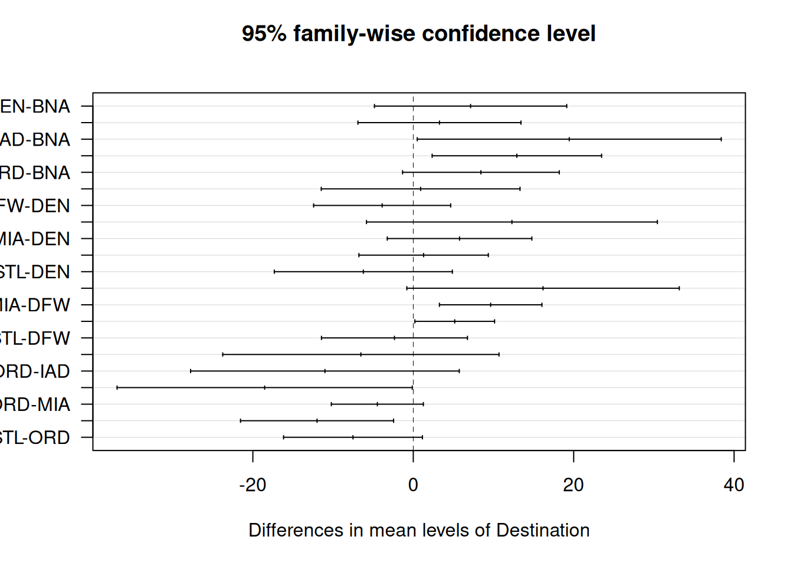

R was inherently designed for statistical analysis. Therefore, it is justified to devote a chapter to statistical tests. Here, we will discuss a list of classic statistical tests with an emphasis on the Null Hypothesis Significance Test (NHST). We assume that readers have a sound background in undergraduate-level statistics, i.e., they know the t statistic, \(\chi^2\) statistic, confidence interval, p-value, correlation, etc. The goal of this chapter, as well as the whole book, emphasizes using R - the how. For readers who need to refresh basic statistical concepts, there are many excellent introductory statistics textbooks freely available on the Internet123. Interested readers are recommended to consult them for further detail.
Learning Objectives:
Test a quantitative variable in one, two, or more groups.
Test for one or two categorical variables.
Linear regression
4.1 Housekeeping
We use two new data sets in this chapter: FlightDelays, and Groceries . Follow the steps below to import them into RStudio.
if (!require(resampledata)) {install.packages('resampledata')}
Loading required package: resampledata
Attaching package: 'resampledata'
The following object is masked from 'package:datasets':
Titanic
ID Carrier FlightNo Destination DepartTime
Min. : 1 AA:2906 Min. : 71.0 BNA: 172 4-8am : 699
1st Qu.:1008 UA:1123 1st Qu.: 371.0 DEN: 264 8-Noon :1053
Median :2015 Median : 691.0 DFW: 918 Noon-4pm:1048
Mean :2015 Mean : 827.1 IAD: 55 4-8pm : 972
3rd Qu.:3022 3rd Qu.: 787.0 MIA: 610 8-Mid : 257
Max. :4029 Max. :2255.0 ORD:1785
STL: 225
Day Month FlightLength Delay Delayed30
Sun:551 May :1999 Min. : 68.0 Min. :-19.00 No :3432
Mon:630 June:2030 1st Qu.:155.0 1st Qu.: -6.00 Yes: 597
Tue:628 Median :163.0 Median : -3.00
Wed:564 Mean :185.3 Mean : 11.74
Thu:566 3rd Qu.:228.0 3rd Qu.: 5.00
Fri:637 Max. :295.0 Max. :693.00
Sat:453
It contains 10 variables, out of which two are quantitative variables (FlightLength, and Delay), and the rest are categorical variables. Notice that there is a glitch: R mistakenly considered FlightNo as a quantitative variable. However, it does not affect us, as we do not use this variable here. If you want to convert it to a categorical variable (factor), here is the step:
The Groceries data set contains the product prices from Target and Walmart.
summary(Groceries)
Product Size
Annie's Macaroni & Cheese : 1 Length :30
Barilla Angel Hair Pasta : 1 N.unique :24
Betty Crocker Super Moist Chocolate Fudge Cake Mix: 1 N.blank : 0
Campbell's Chicken Noodle Soup : 1 Min.nchar: 3
Cheez-it Original Baked : 1 Max.nchar: 8
Dinty Moore Hearty Meals Beef Stew : 1
(Other) :24
Target Walmart Units UnitType
Min. :0.990 Min. :1.000 Length :30 Length :30
1st Qu.:1.827 1st Qu.:1.760 N.unique :16 N.unique : 3
Median :2.545 Median :2.340 N.blank : 0 N.blank : 0
Mean :2.762 Mean :2.706 Min.nchar: 1 Min.nchar: 2
3rd Qu.:3.140 3rd Qu.:2.955 Max.nchar: 2 Max.nchar: 5
Max. :7.990 Max. :6.980
Lastly, we need to activate tidyverse.
suppressMessages(require(tidyverse))
4.2 Tests for Quantitative Variables
4.2.1 One-sample t-tests
The goal of a one-sample t-test is to test if the mean of a quantitative variable is equal to a certain value. For example, if the aviation regulatory agency states that acceptable flight delay is 12 minutes. We want to see if the flights meet the requirement. The null hypothesis (\(H_{0}\)) is that the mean delay is equal to 12 minutes. The alternative hypothesis (\(H_{A}\)) is that the mean delay is not equal to 12 minutes. Here are the steps to perform such a test:
t.test(FlightDelays$Delay, mu =12)
One Sample t-test
data: FlightDelays$Delay
t = -0.39963, df = 4028, p-value = 0.6895
alternative hypothesis: true mean is not equal to 12
95 percent confidence interval:
10.45205 13.02375
sample estimates:
mean of x
11.7379
As the p-value (0.6895) is greater than \(\alpha\) = 0.05 at a 95% confidence level, we fail to reject the null hypothesis \(H_{0}\), meaning that the mean flight delay meets the standard.
4.2.2 One-sided t-tests
In the above flight delay example, the condition to reject the \(H_{0}\) is that the delay time is either much longer or much shorter than 12 minutes (that is why the test is called two-sided). Indisputably, the latter case does not make much sense, as short delay times indicate the flights are punctual. Hence, the test must focus on long delay times by replacing the above two-sided test with a one-sided test in which the rejection region (\(H_{A}\)) lies at larger t-statistics (on the right). The parameter alternative="greater" suggests a one-sided test where the rejection region lies at the greater value.
t.test(FlightDelays$Delay, mu =12, alternative ="greater")
One Sample t-test
data: FlightDelays$Delay
t = -0.39963, df = 4028, p-value = 0.6553
alternative hypothesis: true mean is greater than 12
95 percent confidence interval:
10.65885 Inf
sample estimates:
mean of x
11.7379
The p-value 0.6553 is larger than \(\alpha\) = 0.05, fail to reject the \(H_{0}\) at a 95% significance level.
4.3 Two-sample t-tests
A two-sample t-test tests whether the mean of one group is the same as the other group. The \(H_{0}\) states the two groups have the same mean, and the \(H_{A}\) states otherwise.
For example, we want to compare the mean delays of the two carriers to determine whether they are the same.
Welch Two Sample t-test
data: AA_delay$Delay and UA_delay$Delay
t = -3.8255, df = 1843.8, p-value = 0.0001349
alternative hypothesis: true difference in means is not equal to 0
95 percent confidence interval:
-8.903198 -2.868194
sample estimates:
mean of x mean of y
10.09738 15.98308
Based on the p-value (0.0001349) being less than \(\alpha\) = 0.05, the delays of the two carriers are different. The bottom of the test results shows that the mean delay for AA (group x) is 10.09738, shorter than UA’s 15.98308.
Solution 2:
This approach makes use of the categorical variable carrier to split the data set into two, avoiding the creation of two temporary data frames.
t.test(Delay ~ Carrier, data=FlightDelays)
Welch Two Sample t-test
data: Delay by Carrier
t = -3.8255, df = 1843.8, p-value = 0.0001349
alternative hypothesis: true difference in means between group AA and group UA is not equal to 0
95 percent confidence interval:
-8.903198 -2.868194
sample estimates:
mean in group AA mean in group UA
10.09738 15.98308
The symbol ~ means “split by”. Delay ~ Carrier means to split Delay by Carrier.
4.3.1 One-way ANOVA
A one-way ANOVA test tests whether the means of three or more groups are the same or not. Two key differences from the two-sample t-test above: 1. a two-sample t-test can handle only two groups, but ANOVA can handle two or more groups. 2. The \(H_{0}\) of ANOVA is rejected if any pair(s) of groups have unequal means.
For example, test whether mean delays vary by destination.
Df Sum Sq Mean Sq F value Pr(>F)
Destination 6 62891 10482 6.094 2.29e-06 ***
Residuals 4022 6918028 1720
---
Signif. codes: 0 '***' 0.001 '**' 0.01 '*' 0.05 '.' 0.1 ' ' 1
If you only care whether the \(H_{0}\) can be rejected, focus on the overall p-value (2.29e-06) under the Pr(>F) column on the right. It is undeniably smaller than \(\alpha\) = 0.05, so the \(H_{0}\) can be rejected.
In some situations, you may be interested in finding out which pair(s) do not have the same mean. Tukey’s Honest Significant Difference (HSD) test can answer this question.
It lists all possible pairs of destinations. Since there are seven destinations, the total number of pairs is 21 (choose(7,2)).
Each row shows the difference of means (diff), the lower (lwr) and upper (upr) bounds of the confidence interval, and the adjusted p-value (p adj). Examining the p-value is the quickest way to identify pairs with unequal means. E.g., IAD-BNA in which the p-value is less than 0.05.
To ease analysis, it is suggested to plot the HSD result as below:
hsd_results <-TukeyHSD(aov_results)# las=1 causes the plot to print the pair name horizontally.plot(hsd_results, las=1)

Confidence intervals not crossing zero (the vertical line) indicate pairs have unequal means.
4.3.2 Paired t-tests
A paired t-test detects whether two mean measurements of a sample differ. For example, in a drug trial, a subject’s blood pressure is measured before and after taking the tested drug. Each sample is a subject. The measurements are blood pressure. The \(H_{0}\) is the mean difference between the two measurements from all samples is zero.
Here we will examine whether the product prices between Target and Walmart are different. The sample is a product. The two measurements are the prices from Target and Walmart.
Paired t-test
data: Target and Walmart
t = 0.47046, df = 29, p-value = 0.6415
alternative hypothesis: true mean difference is not equal to 0
95 percent confidence interval:
-0.1896825 0.3030159
sample estimates:
mean difference
0.05666667
The p-value of 0.6415 > \(\alpha\) = 0.05 suggests that there is no statistical difference between the two stores at the 95% confidence level. The mean price difference of all the products in the sample is 0.057, which is not considered a significant difference from zero.
4.4 Tests for Categorical Variables
4.4.1 One Categorical Variable
Here, we want to check whether the proportions of categories match a specified expected ratio. In standard textbooks, this test is called the Chi-square (\(\chi^{2}\)) goodness-of-fit test. For example, Delayed30 indicates whether the flight was delayed by more than 30 minutes; it is either Yes or No. Suppose the regulatory standard recommends not more than 10% of a random sample of flights. First, figure out how many Yes and No in the sample.
table(FlightDelays$Delayed30)
No Yes
3432 597
The data set contains 4,029 flights; 3,432 were punctual, and 587 were delayed. According to the standard, the number of delayed flights should be no more than 10% of the total, or 402. Due to random variation in sampling, we cannot conclude an issue is present simply because 587 is greater than 402. Here’s where the \(\chi^2\)-test comes in.
Chi-squared test for given probabilities
data: table(FlightDelays$Delayed30)
X-squared = 103.9, df = 1, p-value < 2.2e-16
The \(H_{0}\) assumes the proportions agree with the expected ratio. The p-value shown above is literally zero, indicating that the proportions of Yes and No do not conform to the expected 9:1 ratio at the 95% confidence level.
One remark about setting up the proportion parameter p=c(0.9,0.1). Make sure that the order of the proportions matches the sequence of the categories produced by the table() function. Additionally, the proportions must sum to 1.
4.4.2 Two Categorical Variables
Here we examine the dependency between two categorical variables. The test is colloquially called \(\chi^{2}\) Test for Independence. For example, we want to know whether a delay of more than 30 minutes depends on the carrier, that is to say whether Delayed30 is independent of Carrier. The \(H_{0}\) assumes that they are independent.
Pearson's Chi-squared test with Yates' continuity correction
data: Carrier and Delayed30
X-squared = 13.462, df = 1, p-value = 0.0002434
Note that correct=TRUE instructs the test function to make adjustments in calculating the \(\chi^2\) statistic. The correction is only applicable for a 2x2 contingency table with small counts. However, it does little harm if you turn it on for tables with a different dimension or large counts4. My suggestion is to turn it on all the time.
As the p-value of 0.0002434 is less than 0.05, reject the \(H_{0}\) at the 95% confidence level, meaning that Delay30 and Carrier are not independent. This conclusion suggests that the proportion of delayed flights differs between the two carriers. To be clear, their dependency says nothing about the carriers’ delay issue. To figure that out exactly, we should examine the proportion of delayed flights for each carrier using a new function prop.table() as below:
Delayed30
Carrier No Yes
AA 0.8647626 0.1352374
UA 0.8183437 0.1816563
We feed the contingency table of Carrier by Delayed30 to the prop.table() function with margin=1, meaning that values are divided by the row totals or the sum of the proportions for each row is 1. As you can see, both carriers have an issue under the 10% rule, but the issue with UA is more severe than AA.
4.5 Regression
4.5.1 Simple Linear Regression
A simple linear regression (SLR) model involves a predictor X (independent variable) and a response Y (dependent variable), where both of them are quantitative, but they have different roles.
\[Y = \beta_{0} + \beta_{1}X\]
where \(\beta_{0}\) is the intercept, and \(\beta_{1}\) is the slope.
The relationship between them in an SLR is linear and directional. Firstly, the predictor is believed to influence the response, and not the reverse; therefore, it is directional. For example, temperature (predictor) is supposed to influence ice cream sales (response), and not the other way.
Secondly, the relationship is linear, meaning that a unit increment of X will cause Y to increase or decrease by \(\beta_{1}\) units for every X within the range of X in the data.
Finally, an SLR can only establish a correlation between X and Y, but not causation.
Here we will switch to the familiar built-in iris data set to demonstrate how to build an SLR. Suppose we are interested in whether Sep.Length (predictor) affects Sep.Width (response) for setosa species. The first step for building an SLR is to visualize the relationship between the two variables using a scatter plot (Section 3.2.5 or Section 3.3.6). Do not downplay the intuition of visual inspection. In the absence of an upward or downward trend, the attempt to build an SLR is deemed fruitless. On a positive note, the plot may still reveal an intriguing trend not as expected, requiring a different kind of model or variable transformation. Anyway, let’s plot the two variables.
Call:
lm(formula = Sepal.Width ~ Sepal.Length, data = setosa_iris)
Residuals:
Min 1Q Median 3Q Max
-0.72394 -0.18273 -0.00306 0.15738 0.51709
Coefficients:
Estimate Std. Error t value Pr(>|t|)
(Intercept) -0.5694 0.5217 -1.091 0.281
Sepal.Length 0.7985 0.1040 7.681 6.71e-10 ***
---
Signif. codes: 0 '***' 0.001 '**' 0.01 '*' 0.05 '.' 0.1 ' ' 1
Residual standard error: 0.2565 on 48 degrees of freedom
Multiple R-squared: 0.5514, Adjusted R-squared: 0.542
F-statistic: 58.99 on 1 and 48 DF, p-value: 6.71e-10
The slope and the intercept can be found under the Estimate column of Coefficients subsection. In this example, the intercept \(\beta_{0}\) is -0.5694, and the slope \(\beta_{1}\) (Sepal.Length) is 0.7985. So the SLR model is:
The SLR model says that a unit increase in Sepal.Length, Sepal.Width will increase by 0.7985 units.
To judge whether they are statistically significant, examine the p-values under the column Pr(>|t|). The p-value of the slope is close to zero, suggesting that it is statistically significant; unfortunately, the intercept is not. It means that the linear correlation between Sepal.Width and Sepal.Length is strong. However, it is completely accurate to predict Sepal.Width using Sepal.Length.
Since we mentioned correlation, the Multiple R-squared is the square of Pearson’s correlation between the two variables. Let’s verify this.
Suppose we are keen to predict Sepal.Width by Sepal.Length and Petal.Length for setosa iris. Similar to SLR, we visualize the data but using a multipanel scatter plot Section 3.2.6, Section 3.3.7).
Here we visualize the trend between Sepal.Width and Sepal.Length (2nd row and 1st column), and Sepal.Width and Petal.Length (2nd row and 3rd column). Despite the trend not being clear between Sepal.Width and Petal.Length , let’s proceed to build an MLR model.